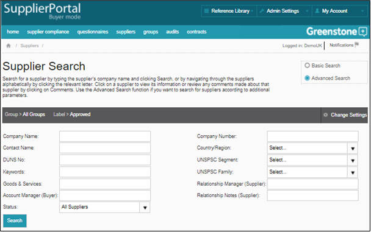

Use the Quick Search function to search for a Supplier by typing the Supplier’s company name and clicking ‘Search’, or by navigating through the Suppliers alphabetically by clicking the relevant letter. If no search variables are selected before you click search, all Suppliers that are publishing their data to you will be displayed.
Use the Advanced Search function if you want to search for Suppliers according to additional parameters. These are Contact name, Company Number, Country/Region, Keywords, DUNS number, UNSPSC Segment and Family, Label, Group, Goods and Services, Account Manager, Relationship Manager and Relationship Notes.
Should you wish to filter your search by your groups and labels, then click on ‘Change settings’.

Once you have clicked ‘search’, you will have the option to use the ‘Showing’ drop down menu to search across ‘All Suppliers’ in Supply-Chain Sustainability (SCS), ‘Only your Suppliers’ or ‘Results excluding your suppliers’.
Selecting ‘All Results’ or ‘Results excluding your suppliers’ will allow you to view the Public Profile of companies who are currently not on your Supplier list. This profile will include an overview of the company, areas of disclosure and provide you with contact details if available. Click on ‘Request Full Profile’ if you would like to see the Suppliers full questionnaire responses.